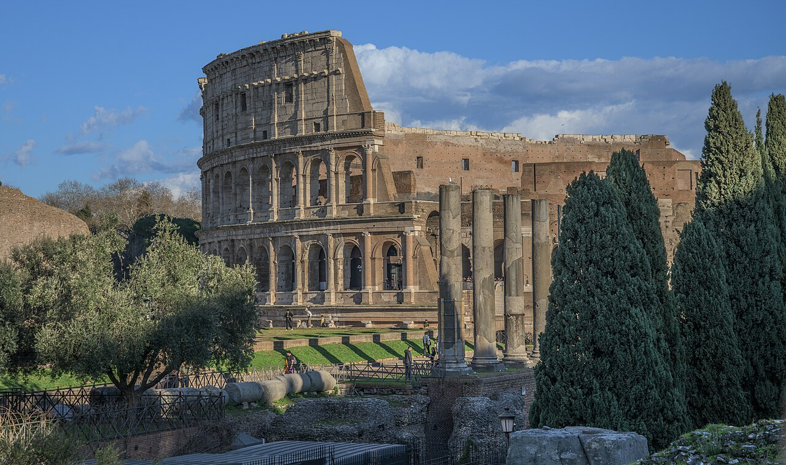
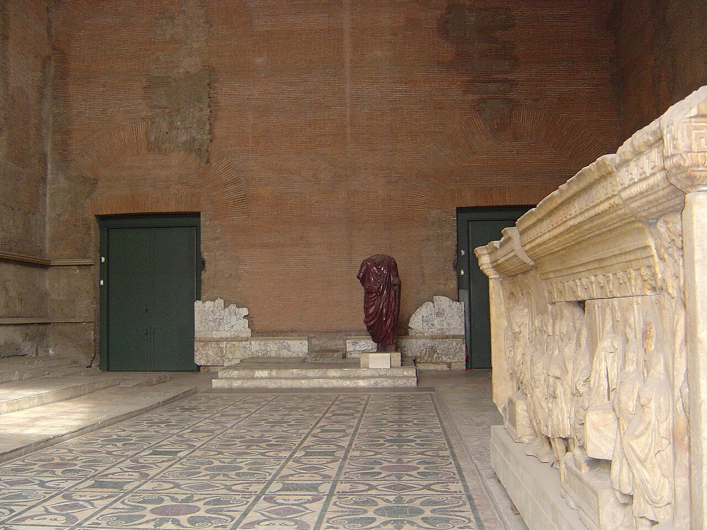
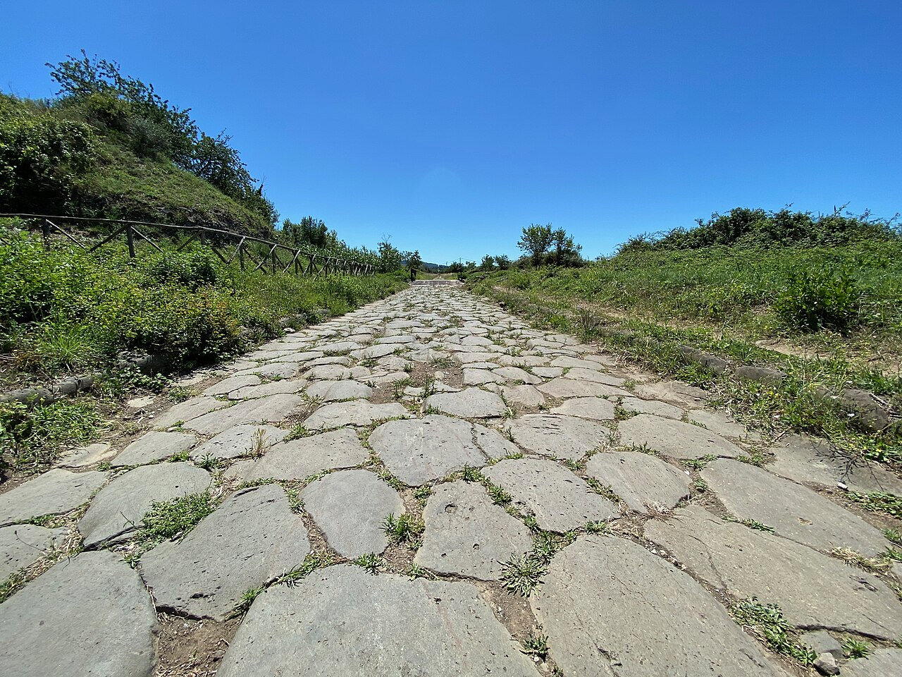
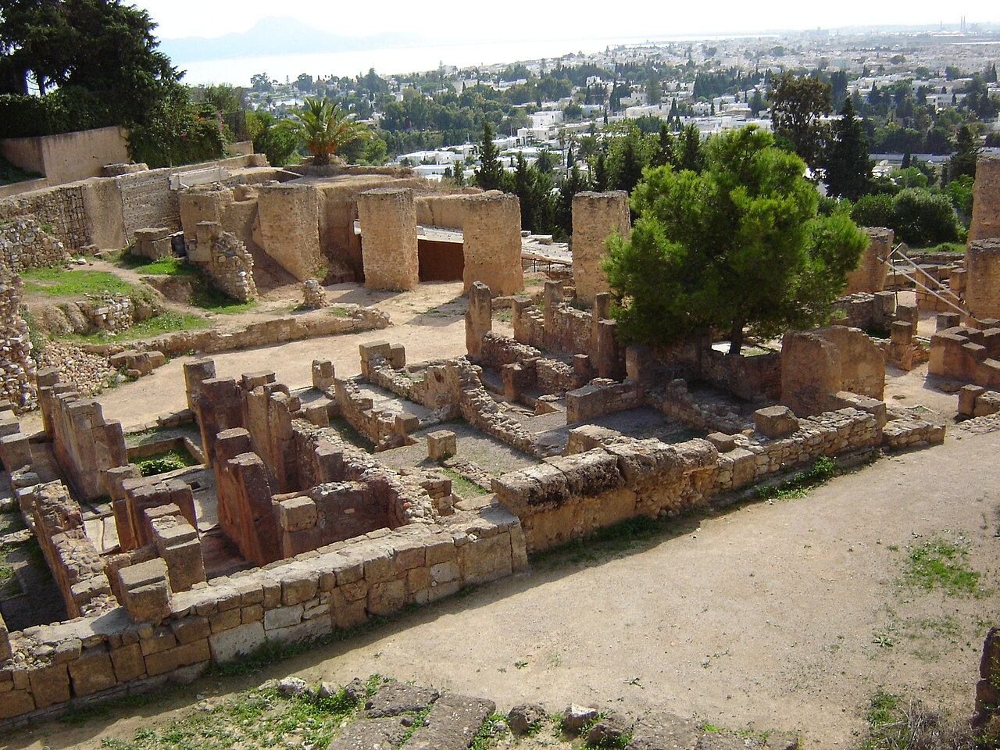
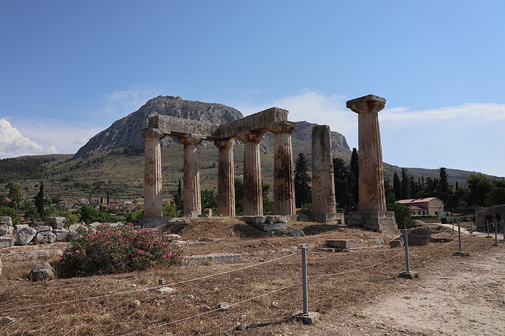
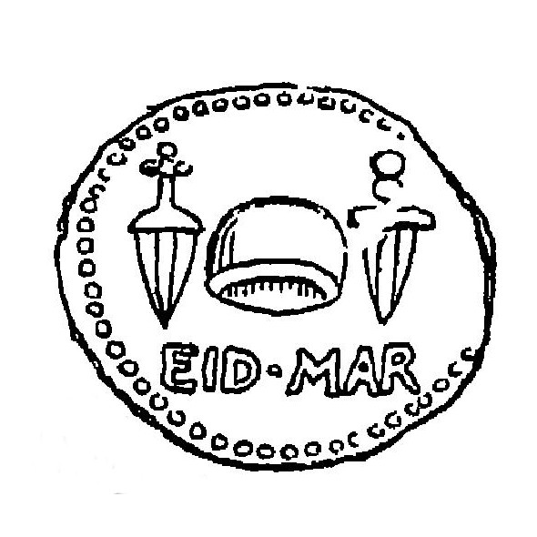
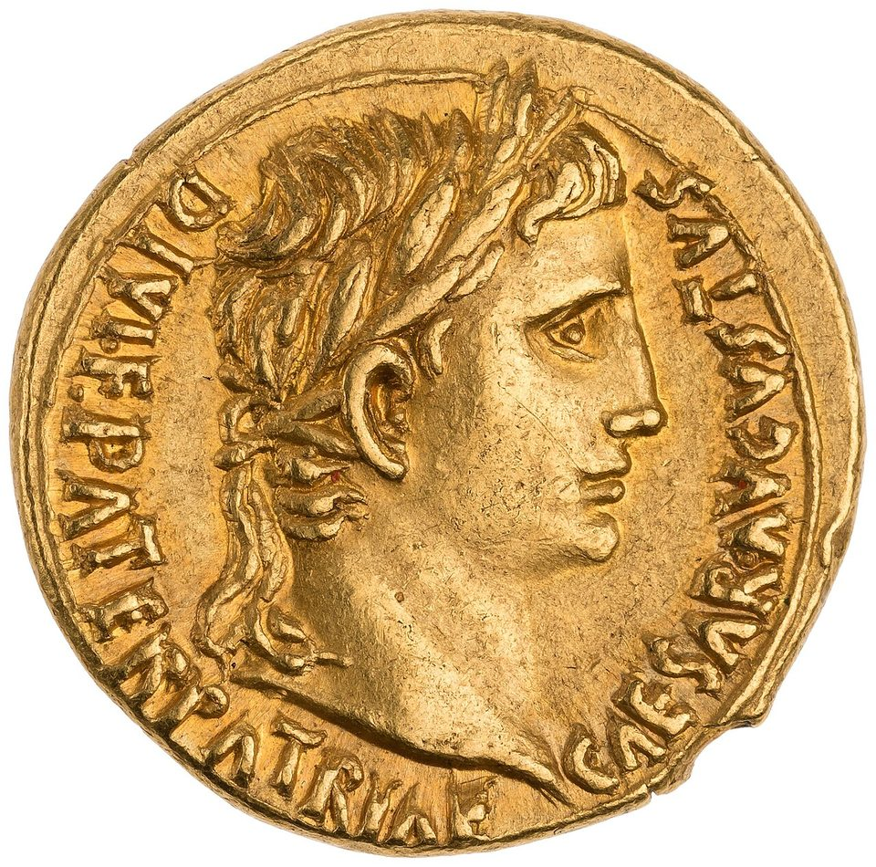
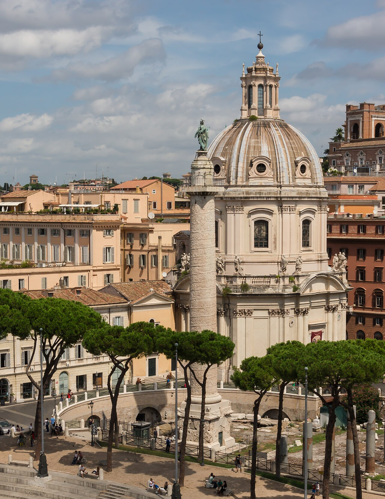

歴史・地理 History & Geographyローマは、 なぜ地中海を まるごと 手に入れた？ イタリア半島の小さな町だったローマは、共和政が始まってから500年足らずで、地中海をぐるりと囲む国になりました。決め手は、負けない強さではなく、負けても兵がつきないしくみでした。共和政のしくみの図と、広がっていく地図で、その秘密をのぞいてみませんか。
2026.11.09 UP 約8分で読める 文：SOMOSOMO編集部
写真：コロッセオ（1世紀後半に建てられた闘技場）とフォロ・ロマーノ／Wilfredor（2024年、CC0）
Previously
前回は、アレクサンドロスが10年でインダス川の先まで進み、王の死後、帝国がプトレマイオス朝・セレウコス朝・アンティゴノス朝などに割れた話でした。3つの国は、どれも最後はローマに敗れるか、組みこまれます。
イタリア半島の南東、カンナエの野で、前216年8月2日。ローマはそれまでで最大の軍を出し、北アフリカの国カルタゴの将軍ハンニバルに囲まれて大敗しました。少なくとも6万7,500人が、1日で殺されるか捕らえられたとされます。ふつうの国なら、ここで和平を申し出るところです。
けれどもローマは降参しませんでした。兵を集め直して戦い続け、前30年までに、地中海の岸をほぼぐるりと自分のものにします。イタリア半島の中ほどの町だったローマは、なぜ地中海をまるごと手に入れられたのでしょうか。
In a word
負かした相手を仲間 にして兵を出させ、兵がつきなかった から。
01
The Republic
王を追い出し、 1人に力を 持たせない 形にした
話は、カンナエの300年ほど前にさかのぼります。伝えによれば前509年、ローマの人々は最後の王タルクィニウスを追い出し、王のいない国、共和政になりました。
王の力は、毎年民会で選ばれる2人のコンスル（執政官）に分けられました。任期は1年。軍を率いる大きな力を持ちますが、もう1人の決定を拒むこともできました。1人がずっと力を握らないための形です。
コンスルに助言したのが元老院です。共和政の半ばには300人ほどの有力者が一生その座にいて、国が広がるにつれ、国のお金や外交、軍をどこへ送るかを握るようになりました。法を定め、戦争か和平かを決めるのは民会の役目でした。

元老院が集まった建物 古代ローマの町の中心だった広場、フォロ・ロマーノに残る元老院の議場（クリア・ユリア）の中です。修復された建物で、床には色の違う石を組んだ模様が広がっています。写真：Inside Restored Senate House (Curia) ／Dneale52（2006年、パブリックドメイン）
ただ、はじめのころ要職につけたのは貴族（パトリキ）だけでした。ふつうの市民である平民（プレブス）は反発し、町を出て丘にこもります。こうして、平民が選び、決定を拒める護民官が生まれました。争いは前287年まで200年あまり続きます。
Fig.01 力を分けて、 おたがいに 止め合う
コンスル
任期1年・軍を率いる
コンスル
任期1年・軍を率いる
拒む
元老院
約300人（共和政半ば）
お金と外交を握る
民会
市民が集まる
法と戦争を決める
助言する
毎年選ぶ
護民官
平民が選ぶ
決定を拒める
見どころは、赤い矢印の「拒む」力が、2か所に置かれていること。2人のコンスルどうしも、平民の選ぶ護民官も、決定を止められました。誰か1人が王のようにならないための工夫です。
02
Allies, Not Subjects
負かした相手から、 税ではなく 兵を取った
共和政のローマの転機は前338年、同じラテン語を話すラテン人の町々との戦争に勝ったことでした。負けた相手をどう扱うかに、ローマならではのやり方が表れます。
やり方は大きく3つ。一部の町は、まるごとローマの市民にします（投票権のない、一段低い市民権のこともありました）。取り上げた土地には人を移して、新しい町（植民市）を作ります。そして残りの多くとは、いつまでも続く同盟を結びました。
同盟国の務めは、求められた数の兵を、武器をそろえてローマの指揮のもとに出すこと。税は納めず、戦いの分け前はローマ人と半分ずつ分けました。ローマの軍は、いつも半分ほどが同盟国の兵でした。
こうしてローマが勝つたびに、次の戦いに出せる兵が増えていきます。仲間の町どうしをつないだのが道でした。前312年、ローマからカプアまで約195キロの道が通されます。作らせた役人アッピウス・クラウディウスの名をとって、アッピア街道と呼ばれます。

石を敷きつめた道 ローマの南東、サンタ・マリア・デッレ・モーレの近くに残るアッピア街道です。大きな平たい石が、すき間を詰めて並べられています。写真：Via Appia Santa Maria delle Mole ／Gigi er Gigliola（2020年、CC0）
道は、のちにイタリア半島の東南の港ブルンディシウム（いまのブリンディジ）までのびました。同じアッピウスは、ローマの町に水を引く水道も造らせています（水道の話は「古代ローマ人は、どうやって水を街まで運んだ？」 で）。
前280年、南イタリアのギリシャ人の町タレントゥムに頼まれ、エペイロス（いまのギリシャ北西部）の王ピュロスが攻めてきます。アレクサンドロスの親戚（またいとこ）です。ピュロスは勝ちを重ねますが、自分の兵も大きく失いました。
こんな勝ち方をもう一度すれば終わりだ、とピュロスは言ったと伝えられます。割に合わない勝ちを「ピュロスの勝利」と呼ぶのは、ここからです。ローマのほうは、負けても兵を補って戻ってきました。前275年にピュロスは去り、イタリア半島の大部分がローマの同盟の網に入ります。
03
Taking the Sea
海を知らない国が、 船を写して 海の大国に勝った
前264年、ローマはシチリア島に兵を渡します。相手は第4話で見たフェニキア人の町カルタゴ（いまのチュニジア）で、地中海の西の海の大国でした。ポエニ戦争（ポエニはローマ人がフェニキア人を呼んだ名）の始まりです。
海軍を持たなかったローマは前260年、浜に打ち上げられたカルタゴの五段櫂船（乗組員300人ほどの大型の軍船）を手本に、120隻を造ります。敵の船に橋をかけて乗り移る「カラス」も付けました。橋の先の鉤（かぎ）がくちばしのようだったから、などといわれる名です。
嵐で船と兵を何度も失いながら、ローマは船を造り直して戦い続け、前241年に勝ちます。シチリア島は、総督を送って治める土地「属州」の、最初の一つになりました。
前218年、ハンニバルがアルプス山脈を越えてイタリアに攻めこみます。3年足らずで12万人をこえるローマの兵が死ぬか捕らえられ、カンナエのあと、カプアなど南イタリアの多くの同盟国がカルタゴの側につきました。
それでも、人口でいえば同盟国の半分以上はローマから離れませんでした。ローマは兵になれる年を引き下げ、罪人や奴隷まで兵にして軍を立て直します。前202年、アフリカに渡ったローマ軍が、ザマでハンニバルを破りました。
西で勝つと、ローマは東へ向かいます。アレクサンドロスの後継者の国、マケドニアやセレウコス朝に押されたギリシャの町々が、ローマに助けを求めたのです。ローマは前190年にセレウコス朝を、前168年にマケドニアを破りました。
Fig.02 イタリアから、 地中海の ぐるりへ
地中海
ガリア
ヒスパニア
ローマ
カプア
タレントゥム 前272
ブルンディシウム
シラクサ 前212
カルタゴ・ノウァ 前209
カルタゴ 前146
コリントス 前146
アンティオキア 前63
アレクサンドリア 前30
カンナエ 前216
ザマ 前202
前264年までに（イタリア）
前264〜前146年
前146年より後
アッピア街道（おおよそ）
戦いの場所（年は戦いの年）
見どころは、点の色が、イタリアの中（赤い点）から、地中海の西と東（赤い輪）、そして東の端（黒い点）へと移っていくこと。地名の横の年は、その町がローマの手に入った年です。×印はカンナエとザマの戦いの場所。地図は Natural Earth（パブリックドメイン）から作りました。
そして第4話で見たとおり、前146年にカルタゴとコリントスは壊されました。マケドニアは属州になり、ギリシャもローマの支配下に入ります。


征服された側の町 左は、カルタゴのビュルサの丘に残る町並みの跡。前146年、カルタゴの人々が最後までローマに抵抗したのが、この丘でした。右は、コリントスに立つ前6世紀のアポロン神殿の柱です。写真：左 Quartier Punique ／BishkekRocks（2004年、パブリックドメイン）、右 The Temple of Apollo in Ancient Corinth ／George E. Koronaios（2018年、CC0）
負けた側から見れば、ローマは仲間に誘う国であると同時に、逆らう町を容赦なく壊す国でした。カルタゴの人々の記録は町とともに失われ、ポエニ戦争はいまもほぼローマとギリシャの側の記録で語られます。
04
From Republic to Empire
勝ちすぎた共和政は、 皇帝の国に 変わった
征服で、ローマには富と、奴隷にされた人々が流れこみました。アウグストゥスのころ、イタリアの人口の2〜3割が奴隷だったと推計されています。農民の暮らしは苦しくなったと古代の歴史家は書きましたが、いまの研究では誇張だったという見方が強くなっています。
前133年、護民官ティベリウス・グラックスは、国の土地を測り直して貧しい農民に分ける法を通しますが、任期の終わりに反対派に殺されます。弟のガイウスも12年後に命を落としました。話し合いで決まらないことを、力で決める時代の始まりです。
前91年には、イタリアの同盟国の多くが立ち上がりました（同盟市戦争）。軍の半分を出してきたのに、ローマの市民の権利はない──それが同盟国の言い分だったと伝えられます。ローマは勝ちますが、さなかから市民権を与え、イタリアの人々の多くが市民になりました。
内乱の中で力を持ったのが、兵を率いる将軍たちです。カエサルは、いまのフランスにあたるガリアを前51年までに従え、前49年、兵を連れてイタリアの北の境の川ルビコンを渡りました。
内戦に勝つと、非常時にだけ短い期限つきで置く最高の役「独裁官」に、期限なしでつきます。第1章で見た「1人に力を持たせない」形が、ここで崩れました。前44年3月15日、カエサルは元老院の会議で刺されて亡くなります。


短剣の銀貨と、皇帝の金貨 左は、カエサルを殺した一人ブルトゥスの硬貨の裏を描いた、1894年の本の挿絵。短剣2本と自由の印の帽子、「3月15日」を表す EID MAR の文字です。右はアウグストゥスの金貨です。写真：左 Coin of Brutus ／Strachan-Davidson『Cicero and the Fall of the Roman Republic』より（1894年、パブリックドメイン）、右 Gold Aureus of Augustus, Lugdunum ／アメリカ貨幣協会（撮影年不明、CC0）
カエサルの養子オクタウィアヌスは前31年、アクティウムの海戦でアントニウスとクレオパトラの側を破ります。翌年、第2話で見たクレオパトラが亡くなり、エジプトもローマのものに。地中海の岸は、これでほぼぐるりとローマの手に入りました。
前27年、元老院は彼にアウグストゥス（尊い者）の名を贈ります。彼は王と名乗らず、元老院もコンスルも残して、共和政の見かけのまま実際の力を一人で握りました。ここから、皇帝が治める帝政が始まります。
Fig.03 前509年から 180年まで、 4つの時代
前500 前300 前100 100
前509– イタリアをまとめる 王を追い出し、同盟の網を広げる 前264– 海の外へ カルタゴに勝ち、東の王国も破る 前146– 内乱の時代 改革者の死、同盟市戦争、カエサル 前27– ローマの平和 アウグストゥスから五賢帝まで
見どころは、地中海をまるごと手に入れる勢いがついた赤い時代が、120年ほどしかないこと。その前に、イタリアをまとめる長い時代がありました。帯の長さは年数に比例します。
アウグストゥスから180年まで、大きな戦争の少ない「ローマの平和（パクス・ロマーナ）」が続きます。96年からの皇帝たちは、選んだ人を養子にして位を譲りました。この5人が、のちに五賢帝と呼ばれます。
仲間に組みこむやり方は、帝国になっても続きます。48年、皇帝クラウディウスは、ガリアの有力者を元老院に迎えようと説きました。98年に皇帝になったトラヤヌスは、ヒスパニア（いまのスペイン）の生まれ。その下で、帝国の広さは500万平方キロに達しました。

らせんに巻きついた戦いの記録 中央の、像を頂いた細い柱が、ローマのトラヤヌスの記念柱です。113年に完成し、高さは台座を含めて約35メートル。表面には、ドナウ川の北のダキアとの戦いの浮き彫りが巻きついています。右うしろの丸屋根は、のちの時代の教会です。写真：Colonna Traiana Santissimo Nome di Maria dome Rome ／Jebulon（2013年、CC0）
212年には、帝国の自由な住民すべてに市民権が広がります。組みこむやり方の、行き着いた先でした。この帝国のゆらぎは、第12話で見ます。
ふり返ると、ローマの強さは、負けないことではありませんでした。負かした相手を同盟国や市民として組みこみ、兵を出させる。道でつなぎ、市民権で引き寄せる。そしてカンナエで大敗しても、元老院は和平に応じず、戦い続けさせました。そのしくみと粘りが、兵のつきない国を作ったのです。
05
By the Numbers
数字で見る ローマの広がり
77万人 ローマと同盟国で、兵になれる男の数前225年、ハンニバルが来る7年前。騎兵になれる7万人を含む。古代の記録による
220隻 嵐で船団を失ったあと、ローマが造り足した軍船第1次ポエニ戦争の前254年まで。翌年もまた嵐で150隻を失った
40万km以上 帝国が最も栄えたころの道の長さうち石で舗装した道は8万500km以上。地球約10周分にあたる
Here's the Fun Part
ここが面白い！早くも この問いを 立てたのは、 征服された側の 人質だった
ローマは、なぜ地中海を手に入れたのか。この問いに、2,100年以上前に取り組んだ人がいます。ギリシャの政治家ポリュビオスです。前167年、ローマに疑われたギリシャの有力者1,000人 の一人として、人質としてローマに連れてこられました。
ポリュビオスはローマの名家に迎えられ、カルタゴが滅びる場にも立ち会います。そして『歴史』で、前220年ごろから前167年までの、わずか53年ほどで ローマが地中海の大国になった理由を追いました。答えの柱は、Fig.01の共和政のしくみ です。
コンスルは王、元老院は貴族、民会は民衆。3つの力が混ざり、おたがいを抑え合う形だから、ローマは強い──。いまの歴史家は兵を出させる同盟のしくみを重く見ますが、ポリュビオスは政治の形に答えを見ました。
この考えはずっと後に、三権分立を説いたモンテスキューや、アメリカ合衆国の憲法を作った人々にも影響を与えました。
社会の教科書で三権分立の図を見かけたら、その奥に、自分の国を負かした相手の強さを知ろうとした一人の人質がいたことを思い出してみてください。
To be continued
ローマがハンニバルと戦い始める3年前の前221年。ユーラシアの東の端では、中国の西の国・秦の王が、争う国々を一つにまとめました。のちの始皇帝です。秦は、ばらばらの中国をどうやって1つにしたのでしょうか。
出典・参考
Roman Republic ・Roman consul ・Roman Senate （Wikipedia 英語版）：前509年に最後の王タルクィニウスが追い出されたという伝え、毎年選ばれる2人のコンスルとおたがいの拒否権、元老院（共和政の半ばに300人前後・終身）が国のお金・外交・軍の配置を握ったこと、民会が役人を選び法と戦争・和平を決めたこと、前338年のラテン戦争、前280年のピュロスの上陸（2万5,500人・ゾウ20頭、アレクサンドロスのまたいとこ）、前272年のタレントゥムの降伏、前190年のマグネシアと前168年のピュドナ、前146年のコリントスの破壊とマケドニアの属州化・ギリシャの支配、マリウスら将軍の台頭Conflict of the Orders （Wikipedia 英語版）：平民と貴族の争い（前500〜前287年）、平民が町を出たことと護民官の誕生Socii ・Latin rights （Wikipedia 英語版）：負けた相手を市民にする・植民市を作る・同盟を結ぶという3つのやり方、投票権のない市民権、同盟国の務めが兵を出すことで税ではなかったこと、軍の半分ほどが同盟国の兵だったこと、分け前を半分ずつ分けたこと、カンナエのあとも人口で半分以上の同盟国が離れなかったこと、前225年、第2次ポエニ戦争の直前に兵になれる男が77万人（騎兵7万人）とするポリュビオスの記録（数字の欄）Appian Way （Wikipedia 英語版）：前312年、サムニウム戦争のさなかに監察官アッピウス・クラウディウスが造らせたこと、ローマからカプアまで約195km、のちにブリンディジまで、同じアッピウスによる水道アクア・アッピアRoman roads （Wikipedia 英語版）：道の総延長40万km以上、うち石の舗装8万500km以上（数字の欄。地球1周を約4万kmとして計算）Pyrrhic War （Wikipedia 英語版）：前281〜前275年、「こんな勝ち方をもう一度すれば終わり」という伝えと「ピュロスの勝利」という言葉、前275年の撤退First Punic War ・Roman navy ・Corvus (boarding device) （Wikipedia 英語版）：前264〜前241年、前260年に打ち上げられたカルタゴの五段櫂船を手本に120隻を造ったこと、五段櫂船の乗組員300人、カラス（コルウス）と、橋の先のくちばしのような鉤から来たとされる名、嵐で船を失い前254年までに220隻を造り足し翌年150隻を失ったこと（数字の欄）、シチリアが最初の属州になったこと、カルタゴの記録が町とともに失われたことSecond Punic War ・Battle of Cannae （Wikipedia 英語版）：カンナエのあと元老院が捕虜の身代金も和平の話し合いも断ったこと、前218年のアルプス越え、前216年8月2日のカンナエ（それまでで最大の軍、少なくとも6万7,500人が死ぬか捕らえられた）、3年足らずで12万人をこえる損失とカプアなどの離反、兵の年齢の引き下げと罪人・借金を抱えた人・奴隷の動員、前212年のシラクサ、前209年のカルタゴ・ノウァ、前202年のザマと前201年の和平Punic Wars ・Third Punic War ・Battle of Corinth (146 BC) ・Carthage ・Macedonian Wars （Wikipedia 英語版）：「ポエニ」がフェニキア人を指すラテン語であること、前146年のカルタゴの破壊、ビュルサの丘が最後まで抵抗したこと、コリントスの破壊、ギリシャの町々がマケドニアとセレウコス朝に対してローマに助けを求めたことRoman Empire （Wikipedia 英語版）：アウグストゥスのころイタリアの人口の2〜3割（100万〜200万人）が奴隷だったという推計、トラヤヌスのもとで500万km²、212年に帝国の自由な住民すべてに市民権Gracchi ・Social War (91–87 BC) （Wikipedia 英語版）：前133年と前122〜前121年の兄弟の改革と死、農村の衰えという古代の語りと、1980年代以降の考古学の調査ではそれが大きく誇張されていたとする見方、同盟市戦争（同盟国が市民権を求めたというアッピアノスの語り）と市民権の拡大Julius Caesar ・Ides of March ・Roman dictator ・Ides of March coin （Wikipedia 英語版）：前51年までのガリア征服、前49年のルビコン渡河、期限のない独裁官（dictator perpetuo）、前44年3月15日に元老院の会議で殺されたこと、ブルトゥスの硬貨（前43〜前42年、短剣と自由の印の帽子、EID MAR）Augustus （Wikipedia 英語版）：前31年のアクティウム、前27年からの皇帝、「第一の市民」の立場と共和政の見かけPax Romana ・Nerva–Antonine dynasty （Wikipedia 英語版）：前27年〜後180年のローマの平和、五賢帝と養子による継承（最後のマルクス・アウレリウスは実子コンモドゥスに譲った）Lyon Tablet ・Trajan ・Trajan's Column （Wikipedia 英語版）：48年のクラウディウスの演説、トラヤヌスがヒスパニアのイタリカ生まれであること、記念柱の完成（113年）と高さ（台座を含め約35m）、ダキア戦争の浮き彫り、柱の上の像は1587年に置かれた聖ペテロ像であることPolybius ・Histories (Polybius) ・Mixed government （Wikipedia 英語版）：前167年に1,000人の人質の一人としてローマへ、カルタゴの破壊に立ち会ったこと、ローマが大国になった前220〜前167年の53年を追ったこと、コンスル・元老院・民会を王・貴族・民衆にあてた混合政体の考え、モンテスキューやアメリカ合衆国憲法を作った人々への影響Qin dynasty （Wikipedia 英語版）：前221年の統一地図（Fig.02）：Natural Earth （パブリックドメイン）の海岸線から作成。町の位置と道筋はおおよそ。年はそれぞれの町がローマの手に入った年（タレントゥムの降伏、シラクサとカルタゴ・ノウァの攻略、カルタゴとコリントスの破壊、セレウコス朝の終わり、エジプトの併合）。×印のカンナエ（前216年）とザマ（前202年）は戦いの場所と年
写真：CC0 またはパブリックドメイン。クレジットはそれぞれの写真の下に記しています